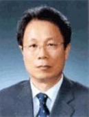

(株）韩国德尔福(DELPHI)
- Home
- 投资优势
- 外商投资企业的成功事例
- (株）韩国德尔福(DELPHI)
(株)韩国德尔福
金鎔重 社长
公司介绍
1984年，韩国德尔福成立于大邱达城产业园区内，是一家由世界最大的汽车综合系统模式供应商—美国德尔福汽车系统公司和代表未来的韩国股东以50：50 合资成立的汽车配件专门制造企业。它主要生产电子装备品、制动装置、方向控制与驱动装置、引擎控制系统等汽车主要核心配件和模式。现在不仅主要向国内汽车品牌—GM 大宇、现代、起亚、双龙、雷诺三星，而且还向通用、克拉斯勒、菲亚特、丰田、奥迪等世界优秀组装车企业供应配件。
目前，韩国德尔福除在大邱的总公司，还在镇川、骊州、群山、福平等，总共五个地方设有工厂。另外，在大邱和龙仁还拥有两家研究所，在泰国、中国、印度、俄罗斯设有海外当地法人。
一般现况
- 投资国/投资企业：美国/德尔福汽车系统(Delphi Automotive Systems)
- 成立年度：1984 年
- 法人代表：金鎔重 社长
- 员工人数：2,200名
- 主要产品：电子装备品、制动装置、驱动装置等汽车主要核心配件和模式
- 地址：大邱广域市 达城郡 论工邑 论工路 664
沿革
- 1984年 10月： 成立大宇汽车配件(株)法人(50/50合资)
- 1985年 9月： 成立大宇HMS工业(株)(50/50)
- 1989年 12月： 大宇汽车配件(株)/大宇HMS(株)吸收、合并
- 2000年 1月： 变更商号(大宇器电工业株式会社→ 韩国德尔福株式会社)
- 2004年 8月： 总公司搬迁至大邱
- 2008年 11月： 授予“出口10亿美元塔”
竞争力与前景
以挺进世界十强汽车配件公司为目标，确保在世界市场上的竞争力。不仅要通过技术革新开发尖端产品，而且还要在技术、品质、价格、服务方面确保优势。